JS / html / sass / jQuery / gulp / wp / anything interesting
2016 Your site
2016 AgataWeber.pl (work in progres): Front-End developed in
Sass with
Bootstrap &
Gulp (Sass Compiler, Autoprefixer, Live preview). Integrated with custom-tailored
WP (Client choosen CMS for galleries management).
2016 MagdaGłośniak.pl:
WP(
php, JS, CSS), fully customized child theme derived from default Twenty Sixteen theme. Custom prev/next post PHP widget with thumbnail. Not available online (customer's vision change)
2016 This site html, css, jQuery, BEM
2016 Spiekikwarcowe.com WP:
basic php theme edits, fully customized
CSS
2016-2004 ad.r music
2014 Application supporting the design of timber structure joints (Master's degree thesis).
Python, utilizing SOLDIS API & Environment. App for designing rectangular cross-section timber elements connections, with metal fasteners, in any two dimensional state of stress.
2013 Application supporting the design of steel beam-to-beam end plate connections. (Engineer's degree thesis)
Python, utilizing SOLDIS API & Environment. App for designing end plate bolted connections, in any two dimensional state of stress.
Catch me on:
Soundcloud
Facebook
Last.fm
Untitled (work in progress, 2017)
2013
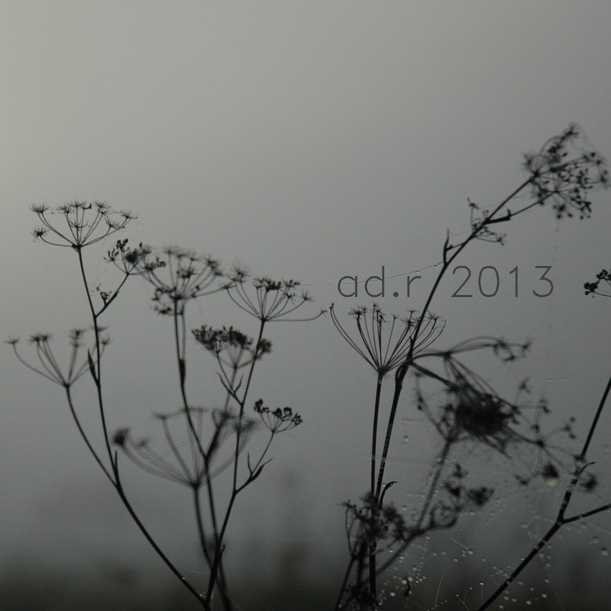
01. Clocks 05:31
02. Music is delay 03:21
03. String 03:35
04. Parus Major 02:58
05. Delay is math 06:33
06. Bridge 02:58
All tracks made in 2013 by Adrian Kowalczewski. Track 2 (except drums) is made exclusively from guitar string sound. Track 3 (except drums) is made exclusively from Parus major sound. Track 5 is based on "Short dance song with glitch surprise" from "Short dance songs EP". Thank you to everything and everyone what/who is my inspiration.
> Listen/buy
Decay
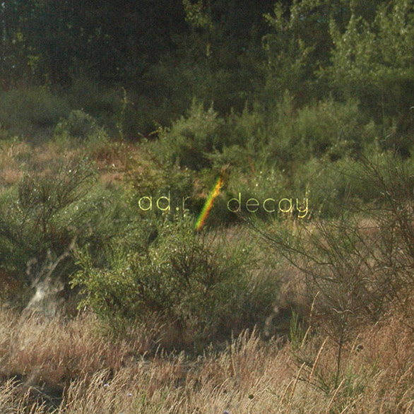
Limited physical release only. Digital on request.
01. Granates 07:31
02. Tętno I 03:18
03. Perypetie 07:36
04. Do/Know 06:27
05. Sleep 07:37
06. Oddychaj 03:52
07. Tętno II 03:18
It's called decay becouse it's about it.
It's dedicated to love and dissolve, farewells and welcomes, without which I wouldn't make those tracks.
All tracks made in 2009-2012 by Adrian Kowalczewski.
> Listen to "Sleep"
> Buy limited physical edition
Select (parts 1 + 2)
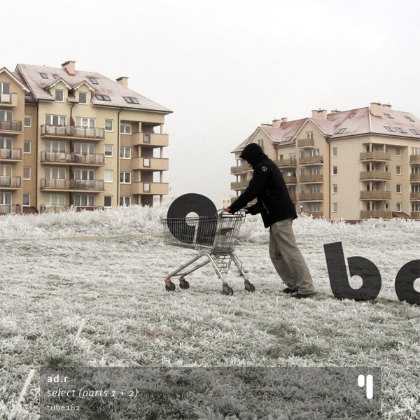
Released on testube netlabel [Tube162]
Runtime: 37'25"
01 Static: c
02 Static: Select a
03 Static: Select b
04 Static: Select c
05 Static: b
06 Move: a
07 Move: Short Guitar Song Part 2
08 Move: Part 3
> Get it now
Reviews:
Pedro Leitao [English]
Fabrik [English]
Short Dance Songs EP
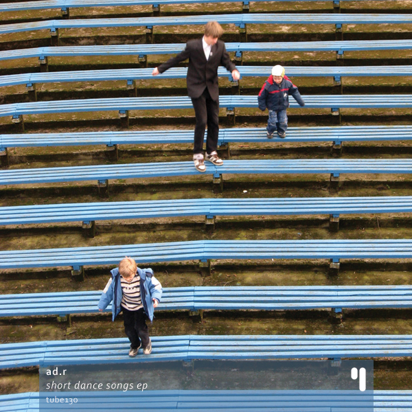
Released on testube netlabel [Tube130]
Runtime: 23'24"
01 Short Guitar Song
02 Out Moon (Of)
03 Short Movie Song
04 Too Short 8 Bit Love Song
05 Short Dance Song With Glitch Surprise
06 Rozliczenie
07 Short Vocal Song (parts 1 + 2)
> Get it now
Reviews:
Pedro Leitao [English]
Axun [Polish]
Marc Weidenbaum [disquiet.com] [English]
Other
Released:
The questionnaire - ad.r
the questionnaire project is based on the original "questionnaire of Marcel Proust" (french writer), created by Antoinette Faure around 1890 and now, submitted to a few personalities – the interest is on the confrontation and crossover between the original questions and nowadays vision on things
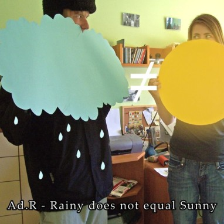[OTR40]"/>
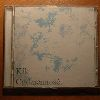1st official. Holded in chillout/ambient style
/ pierwsza 'wypuszczona w świat',
utrzymana w klimacie downtempo/ambient
Click to listen on last.fm">
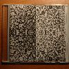Experimental ambient
pychedelic electronica
Click to listen on last.fm"/>
Unreleased:
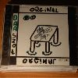Recorded in ejay 2
- contains few skits recorded with schoolmates
in 4th class of grade school /
nagrana w programie ejay 2 - zawiera sporo skitów
nagranych z kolegami w 4 klasie podstawówki."/>
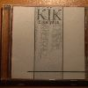1st CD with melodies
composed by myself
/ pierwsza nagrana samodzielnie,
bez użycia gotowych melodii"/>
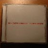Początek Wstępu::[~2005]
Contains tracks from Ełkaliptus
+ few new tracks in electronica climate
zawiera kilka utworów z "Ełkaliptus",
oraz kilka nowych utrzymanych w klimacie electronica"/>
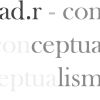Released as pchysical
promo CD only /
Rozpowszechniona jako
fizyczne promo"/>
Productions / Produkcje
PNP - Gracjan Roztocki [2008]
Ad.R - Bez przesady feat. Peno [2008]
Ad.R - Zaczarowany ołówek feat. AZR [2007]
Zaginiona Mike'a Głowa - Rozkurcz [2008
Zaginiona Mike'a Głowa - Cała prawda o nas [2008]
Zaginiona Mike'a Głowa - Skit [2008]
Scratching & Cuts / Skrecze
NSR feat.Peno+dj ad.r - Znasz Mnie [2008]
Peno + Raszu - Pierwszy raz feat. dj ad.r [2008]
Kdj - Być tu feat. Peno, dj. ad.r [2008]